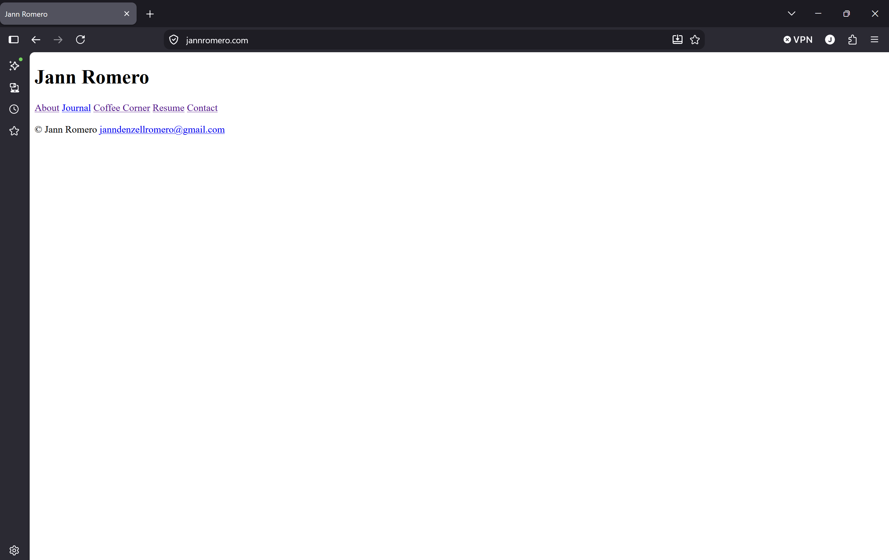

Entry 1
17/9/26
6:16pm
Just posted the most boring shell of a website to jannromero.com.

Finally scratched the itch of making a personal website. I've had this desire to create a really cool one for a long time now but I never got around to spending time on it.
Overconsumption of the work of coding and graphic design masterpieces of others made me think I shouldn't even try to create something unless it could somehow rival theirs. Imposter syndrome-maxxing. I have always had this admiration for people who can think of really beautiful things and share them through their own version of art. I'm still trying to figure out what version of that I can contribute to this space. It was always in front of me.
"Everyone starts from somewhere"
"Don't be shy to show your work to others"
"Build connections"
I still never fully explained why I never got around to making this. I've had the skills and time to make a decent personal site but this desire to be different and 'cool' was always a thing I valued. But how can it be cool if it doesn't exist.
Comparison is the thief of joy.
So today I start my journey to whatever blahblahblahinspirationalwhatnot I will better myself everyday blahblahblahblah
Honestly bro if I can do it so can you.